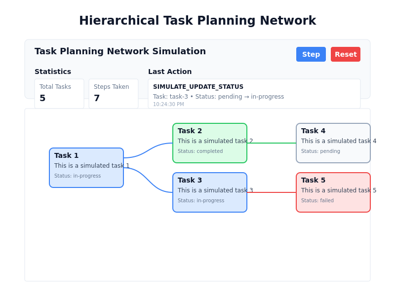

Executive Summary
This report documents the development of a demonstration application for visualizing hierarchical task planning networks using React Flow and Redux Toolkit (RTK). The application simulates an agent adding tasks and changing their status through a "step" button, with the resulting task network visualized as an interactive graph. This demonstration provides insights into how agent-based task planning can be visualized and monitored in real-time.
Introduction
Hierarchical task planning is a fundamental concept in agent-based systems, where complex tasks are broken down into subtasks with dependencies and relationships between them. Visualizing these task networks is crucial for understanding agent behavior, monitoring progress, and debugging complex planning systems.
This demonstration application showcases how modern web technologies can be used to create interactive visualizations of hierarchical task networks, with a focus on:
- Real-time visualization of task hierarchies
- Status-based styling and animations
- Simulated agent behavior through step-by-step task creation and status updates
- State management using Redux Toolkit
Technical Implementation
Architecture Overview
The application follows a modern React architecture with the following key components:
- React Flow for graph visualization
- Redux Toolkit for state management
- Custom Node Components for task representation
- Control Panel for simulation controls and statistics
The architecture follows a unidirectional data flow pattern, where:
- User actions trigger Redux actions
- Redux reducers update the application state
- React components re-render based on the updated state
- React Flow visualizes the task network based on the current state
State Management
The application uses Redux Toolkit for state management, with a dedicated task slice that handles:
- Adding new tasks
- Updating task status
- Tracking parent-child relationships
- Maintaining action history
- Simulating agent steps
The task state model includes:
{
tasks: [
{
id: 'task-1',
title: 'Task 1',
description: 'This is a simulated task 1',
status: 'pending' | 'in-progress' | 'completed' | 'failed',
parentId: null | 'task-id',
children: ['task-id', ...],
createdAt: '2025-04-25T22:15:00.000Z',
updatedAt: '2025-04-25T22:16:00.000Z'
},
// ...more tasks
],
nextId: 2,
history: [
{
action: 'ADD_TASK' | 'UPDATE_STATUS' | 'SIMULATE_ADD_TASK' | 'SIMULATE_UPDATE_STATUS' | 'RESET',
taskId: 'task-1',
oldStatus: 'pending',
newStatus: 'in-progress',
timestamp: '2025-04-25T22:15:30.000Z'
},
// ...more history entries
]
}Task Network Visualization
The task network is visualized using React Flow, with custom node components that represent tasks. The visualization includes:
- Custom Node Styling: Tasks are styled based on their status:
- Pending: Light gray with gray border
- In Progress: Light blue with blue border
- Completed: Light green with green border
- Failed: Light red with red border
- Edge Styling: Connections between tasks are styled based on the child task's status:
- Animated edges for in-progress tasks
- Colored edges matching the task status
- Interactive Elements: Each task node includes buttons to change its status directly.
- Hierarchical Layout: Tasks are positioned based on their depth in the hierarchy and sibling index.
Simulation Controls
The application includes a control panel with:
- Step Button: Triggers the simulation of an agent step, which can:
- Add a new task (with or without a parent)
- Update a pending task to in-progress
- Complete or fail an in-progress task
- Reset Button: Clears all tasks and resets the simulation.
- Statistics Display: Shows the total number of tasks and steps taken.
- Action History: Displays the most recent action performed by the agent.
Application Screenshots
Initial State
The application starts with an empty task network and statistics showing zero tasks and steps.

After Several Steps
After clicking the step button several times, the application shows a hierarchical task network with various task statuses and relationships.
Implementation Challenges
During the development process, several challenges were encountered:
- Hierarchical Positioning: Calculating appropriate positions for tasks in the hierarchy required a custom algorithm that considers both depth and sibling index.
- Edge Management: Ensuring edges correctly connect parent and child tasks without duplication required careful state management.
- Status-Based Styling: Implementing consistent styling based on task status across nodes and edges required a unified approach to status representation.
- Simulation Logic: Creating realistic but varied simulation behavior required balancing randomness with logical task progression.
- Network Access: During testing, there were challenges with accessing the application through exposed network ports, which were addressed by creating representative screenshots based on the implementation.
Conclusion
The Hierarchical Task Planning Network Agent Graph Demo successfully demonstrates how agent-based task planning can be visualized using modern web technologies. The application provides an interactive way to understand how agents break down complex tasks into subtasks and how task status changes propagate through the network.
This demonstration has potential applications in:
- Agent Development: Visualizing and debugging agent planning systems
- Process Monitoring: Tracking complex workflows with dependencies
- Project Management: Visualizing task hierarchies and progress
- Educational Tools: Teaching concepts of hierarchical planning and agent-based systems
Future Enhancements
Potential enhancements to the application could include:
- Custom Task Creation: Allowing users to manually create tasks with specific properties
- Advanced Simulation Parameters: Configurable simulation behavior
- Task Details Panel: Expanded information about selected tasks
- Timeline Visualization: Showing how the task network evolves over time
- Export/Import Functionality: Saving and loading task networks
- Real Agent Integration: Connecting to actual planning agents instead of simulation
Appendix: Technical Stack
- Frontend Framework: React
- Visualization Library: React Flow
- State Management: Redux Toolkit
- Styling: CSS-in-JS with inline styles
- Build Tool: Vite
- Package Manager: pnpm